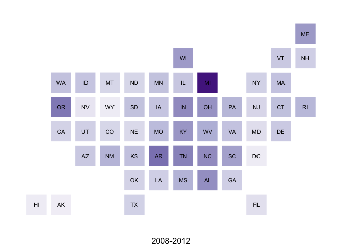

statebins
U.S. State Cartogram Heatmaps in R; an alternative to choropleths of US States ala http://bit.ly/statebins
statebins is an alternative to choropleth maps for USA States
The following functions are implemented:
-
statebins- creates "statebin" charts in the style of http://bit.ly/statebins - This version uses discreteRColorBrewerscales, binned by the "breaks" parameter. -
statebins_continuous- creates "statebin" charts in the style of http://bit.ly/statebins - This version uses a continuous scale based onRColorBrewerscales (passing in a 6 elementRColorBrewerpalette toscale_fill_gradientn).
TODO
- The current version is usable, but I think the plot margins and the legends need work
- Apply algorithm to switch to light-on-dark depending on the background tile color
News
- Version
1.0.0released
Installation
devtools::install_github("hrbrmstr/statebins")Usage
All of the following examples use the WaPo data. It looks like the columns they use are scaled data and I didn't take the time to figure out what they did, so the final figure just mimics their output (including the non-annotated legend).
library(statebins)
# current verison
packageVersion("statebins")## [1] '1.0'
# the original wapo data
dat <- read.csv("http://www.washingtonpost.com/wp-srv/special/business/states-most-threatened-by-trade/states.csv?cache=1", stringsAsFactors=FALSE)
gg <- statebins(dat, "state", "avgshare94_00", breaks=4,
labels=c("0-1", "1-2", "2-3", "3-4"),
legend_title="Share of workforce with jobs lost or threatened by trade", font_size=3,
brewer_pal="Blues", text_color="black",
plot_title="1994-2000", title_position="bottom")
gg
# continuous scale, legend on top
gg2 <- statebins_continuous(dat, "state", "avgshare01_07",
legend_title="Share of workforce with jobs lost or threatened by trade", legend_position="top",
brewer_pal="OrRd", text_color="black", font_size=3,
plot_title="2001-2007", title_position="bottom")
gg2
# continuous scale, no legend
gg3 <- statebins_continuous(dat, "state", "avgshare08_12",
legend_title="States", legend_position="none",
brewer_pal="Purples", text_color="black", font_size=3,
plot_title="2008-2012", title_position="bottom")
gg3
# or, more like the one in the WaPo article; i might be picking the wrong columns here. it's just for an example
sb <- function(col, title) {
statebins(dat, "state",col, brewer_pal="Blues", text_color="black", legend_position="none", font_size=3, plot_title=title, breaks=4, labels=1:4)
}# cheating and using <table> to arrange them below and also making a WaPo-like legend,
# since mucking with grid graphics margins/padding was not an option time-wise at the moment
sb("avgshare94_00", "1994-2000")
sb("avgshare01_07", "2001-2007")
sb("avgshare08_12", "2008-2012")
And, we'll throw in a gratuitous animation for good measure:
# data set from StatsAmerica - http://www.statsamerica.org/profiles/sip_index.html
# median household income from the ACS survey
miacs <- read.csv("http://dds.ec/data/median-income-acs.csv", header=TRUE, stringsAsFactors=FALSE)
# generate frames based on year
sapply(unique(miacs$year), function(year) {
png(file=sprintf("tmp/household%d.png", year),
type="quartz", antialias="subpixel", width=800, height=600)
rng <- floor(range(miacs[miacs$year==year,]$mh_inc))
ggtmp <- statebins(miacs[miacs$year==year,], "state", "mh_inc",
legend_title="States", legend_position="none",
brewer_pal="Greens", text_color="black", font_size=3,
plot_title=sprintf("Median Household Income (ACS) %d\n$%s - $%s", year, comma(rng[1]), comma(rng[2])), title_position="top")
print(ggtmp)
dev.off()
})
# animate them with ImageMagick
system("convert -background white -alpha remove -layers OptimizePlus -delay 150 tmp/*.png -loop 1 tmp/household.gif")
Test Results
library(statebins)
library(testthat)
date()## [1] "Tue Aug 26 17:53:56 2014"
test_dir("tests/")## basic functionality :